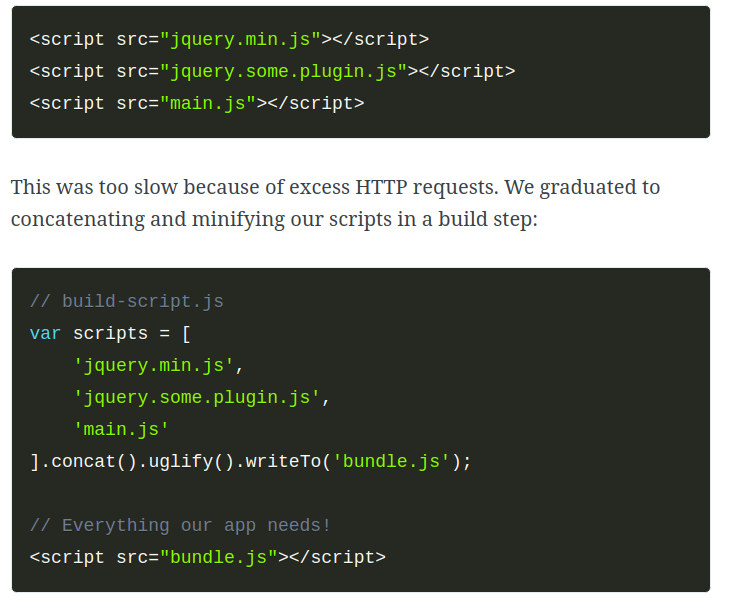
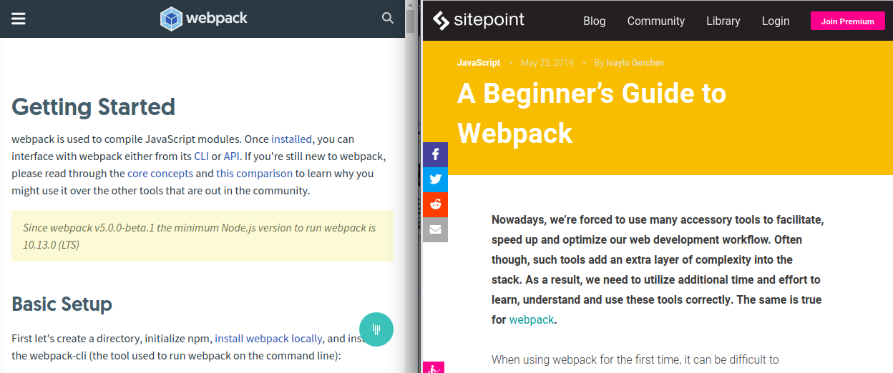
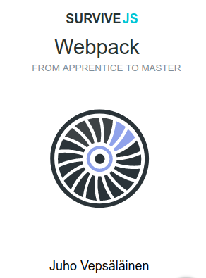
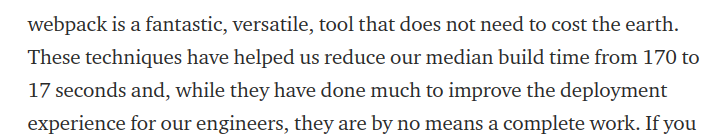
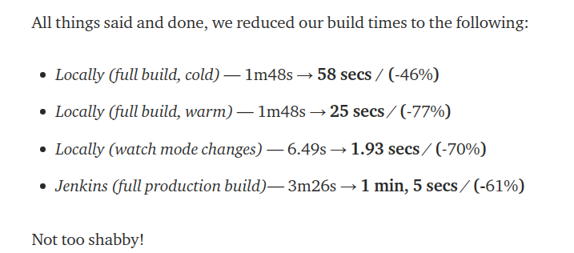
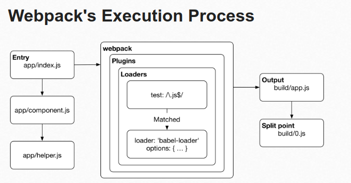
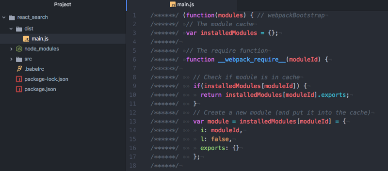
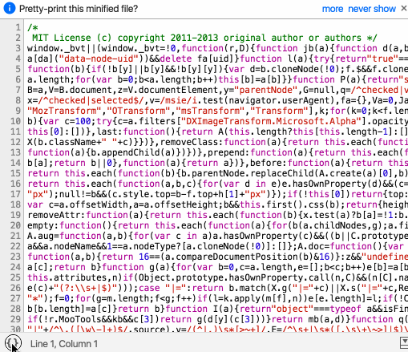
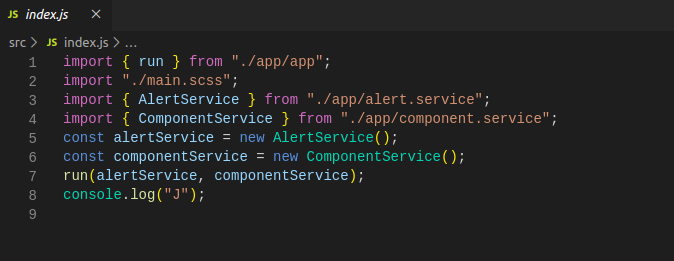
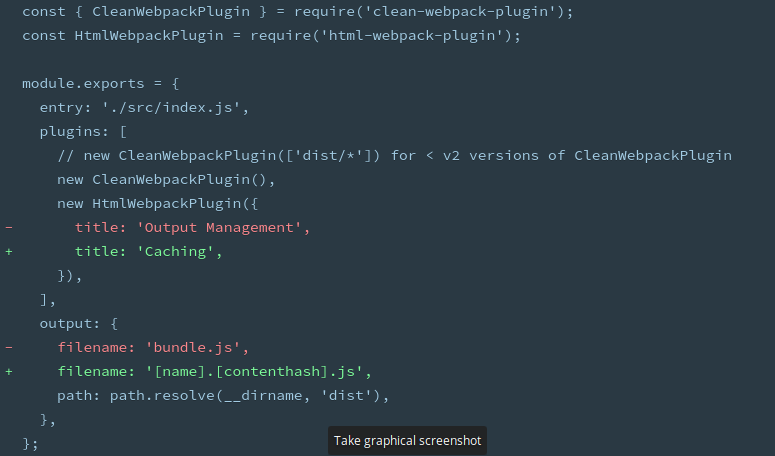

Webpack for Everybody
Jan 2020 Presentation
Always looking for speakers/vteers
This is the easiest bulletpoint to add to your resume.
How I present
tl;dr: I just want pizza. What's Webpack?
- It's a module bundler
- It merges your project into a few files
- It minimizes your code for speed/efficency
- It has loaders to convert file types to other file types
- It's super configurable (which also means you can break it)
- It manages dependencies
- You are probably using it
What is Webpack?

(psst... visit the site... https://webpack.js.org/)
What is Webpack trying to solve?
About "webpack for everyone"
The challenge with Webpack
MOST PEOPLE:
Get a starter kit and don't ever think of webpack.
SELECT FEW:
Modify options to set things up.
THE ELITE:
Start from scratch or apply webpack to giant applications.
MOST PEOPLE
You can use create-react-app, vue-cli, or copy a config from the internet.
SELECT FEW
THE ELITE:
THE (Slack and Onfido) USE-CASES:
 UNDER THE HOOD
SLIDES
- Installing and Running Webpack and Webpack-CLI
- File Structure
- Configuring
- Bundling
- Loaders
- Caching
- Continuous Deployment with watch mode
Installing and Running Webpack and Webpack-CLI
npm install webpack webpack-cli --save-dev
Right out of the box, it should work
Tour of the Dist structure
If you left it to default setup
Tour of the File structure
What it generates
Configuring
Loaders
(psst... click the link)
https://webpack.js.org/concepts/loaders/Bundling
Babel transpiler, ES2015 to JS, etc
Bundling and more loaders
(psst... click the link)
https://github.com/webpack/webpackCaching
Continuous Deployment with watch mode
Webpack conclusions